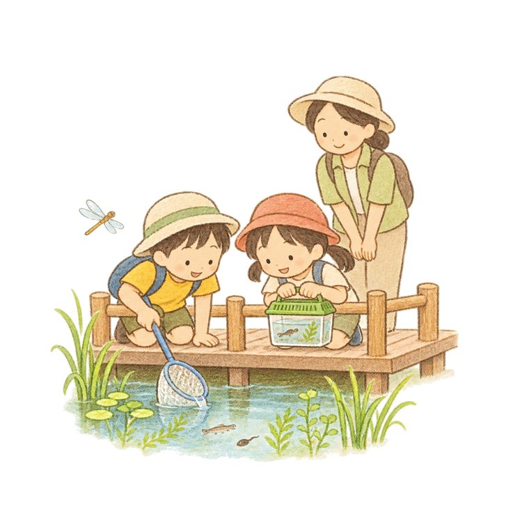

この えに スマホを かざすと
しずくの「リバ」が でてくるよ！
みずの なか・うえ・そらの いきものを さがそう
おうちの方へ：セトリバは企画中のキャンプ場のデモです。リバと生き物は絵と仕組みの見本で、実際の池にいる生き物を約束するものではありません。音声はスマホの読み上げ機能を使います（🔊で止められます）。カメラの映像はこの画面の中で使うだけで、どこにも送りません。
えを この わくに いれてね
すごい！ ほんものの いきものは、
セトリバの「いきもの池」で
ながぐつを はいて さがしてみよう。
おうちの方へ：セトリバ（デモ）は吉井川の河川敷に構想中のファミリーキャンプ場です。いきもの池は川の水が入るビオトープの計画で、生き物さがしは長靴を貸し出す想定です（いずれも計画段階）。